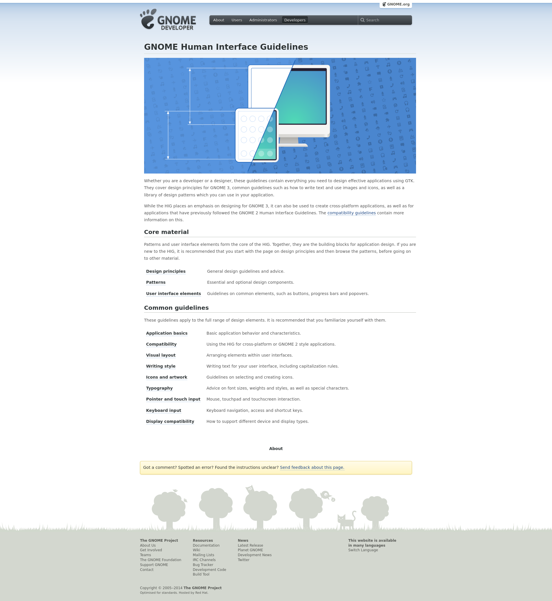

Mission Statement
My website will serve as a place to share and organize tutorials on a variety of technical topics ranging from installing operating systems and web servers to troubleshooting common technical issues.
Goals
- Provide a platform to easily share tutorials on a variety of technical topics
- Organize tutorials in a way that is easily navigable
- Provide templates and other resources for others to contribute their own tutorials
Inspiration
I would like to model my site after the GNOME Human Interface Guidelines. While this is only one part of the larger developer.gnome.org, it does serve as a great inspiration for a standalone site.
What I most like about it is how the home page serves almost exclusively as a table of contents for the rest of the pages. Because its target audience is developers looking for design guidelines to reference, this simplistic design creates a great user experience.
Content
I estimate my site will have at least six pages. These pages include the home page, contribute page, and at least four tutorials.
Home Page
The home page will contain the site's title and an index of the tutorial pages organized by topic. Each index entry will contain the tutorial's title as well as a short description. At the bottom of the page will be a link to the contribute page.
Contribute Page
This page will contain all of the information necessary for anyone else to write and submit their own tutorial for inclusion on the site. This will include but will probably not be limited to a link to download a template, as well as a breif guide on opening a pull request on GitHub.
Tutorial Pages
Each tutorial page will contain a title, link back to the home page, and the tutorial itself. Some examples of planned tutorials are installing Arch Linux, setting up a Minecraft server, and configuring OBS Studio for broadcasting to Twitch.
Target Audience
The target audience of this site is those with limited techinical knowledge. They should undeerstand basic relevent terminology, but need detailed directions in how to acomplish a given task.